Cada auto que sale del taller habla por nosotros. Acá van algunos ejemplos.
By NTG no nació como un lavadero más, sino de la obsesión pura por el detalle y el cuidado automotor. Lo que arrancó como un hobby los fines de semana, puliendo y protegiendo nuestros propios vehículos, se transformó en un taller profesional.
Hoy nos dedicamos a devolverle a cada auto y moto ese brillo de salón que parecía perdido, usando productos premium y técnicas artesanales. No despachamos vehículos en serie: nos tomamos el tiempo que cada uno merece.
Quilmes, Buenos Aires
Lunes a Sábados — Coordinar turno previo
Ver en Google Maps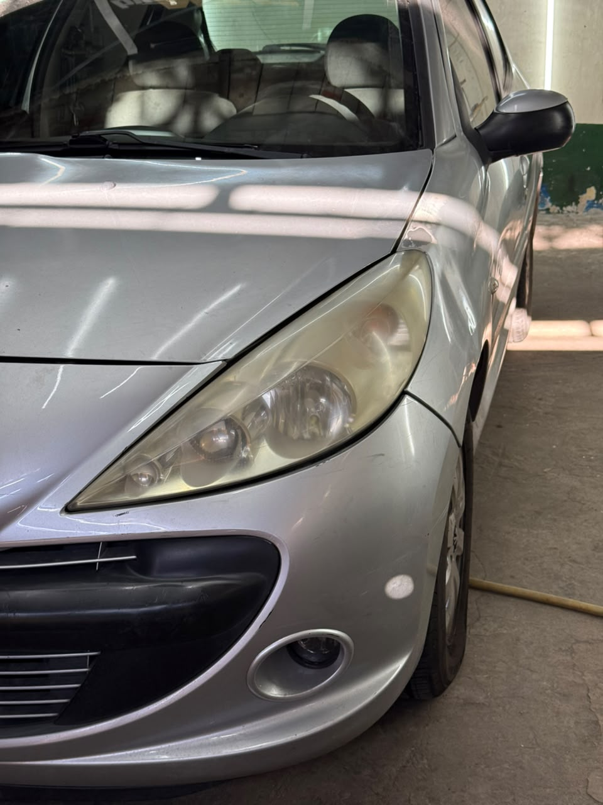
Antes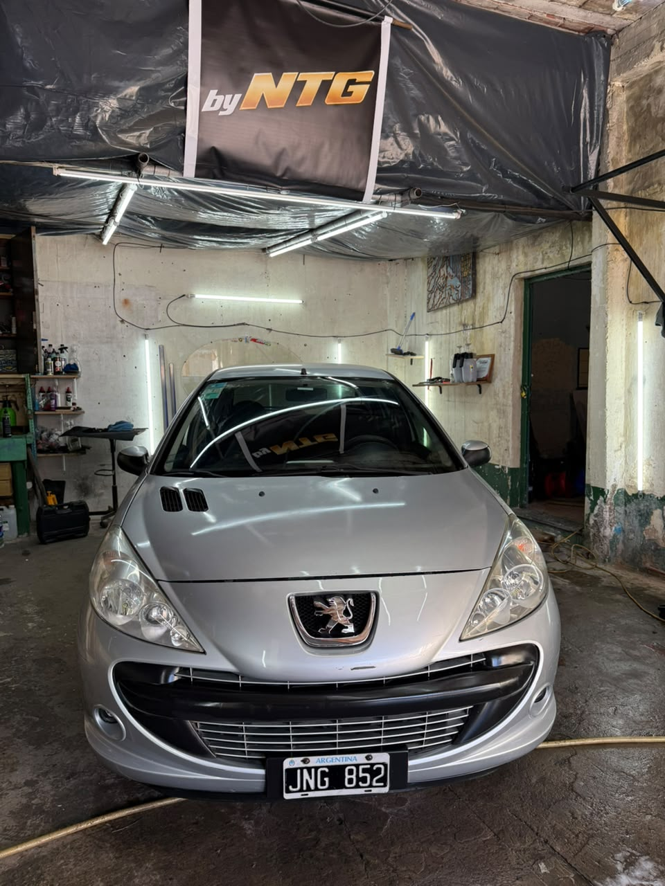
DespuésEliminación del tono amarillento y veteado, recuperando la transparencia y potencia original del haz de luz.
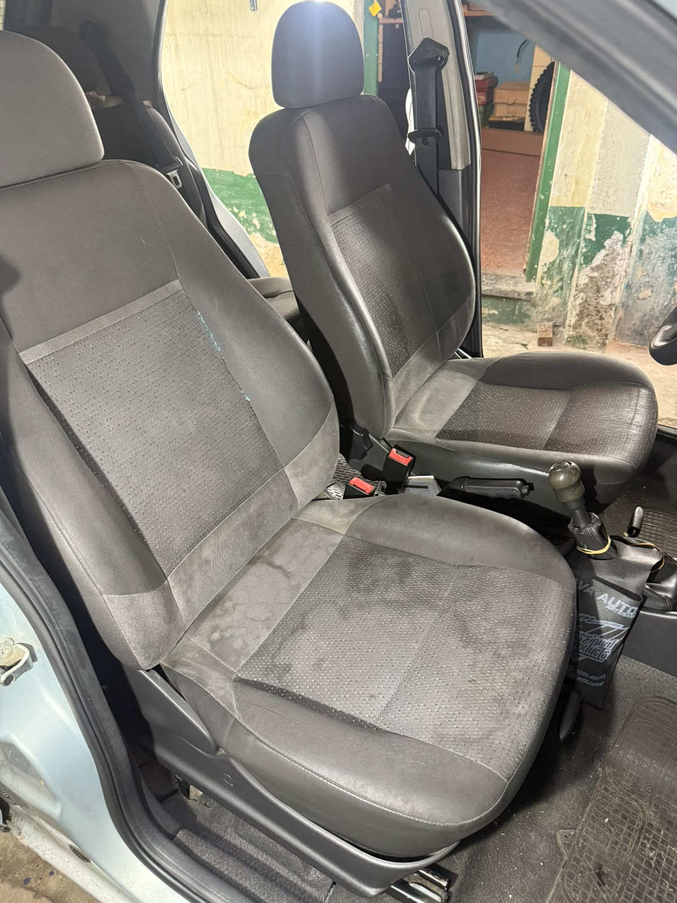
Antes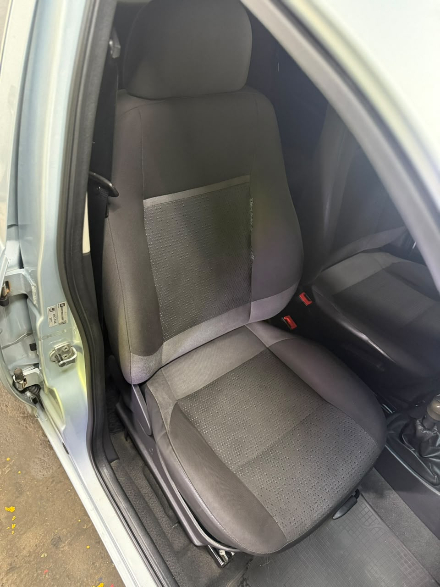
DespuésInyección y extracción para eliminar manchas profundas, aureolas y suciedad acumulada en la tela.
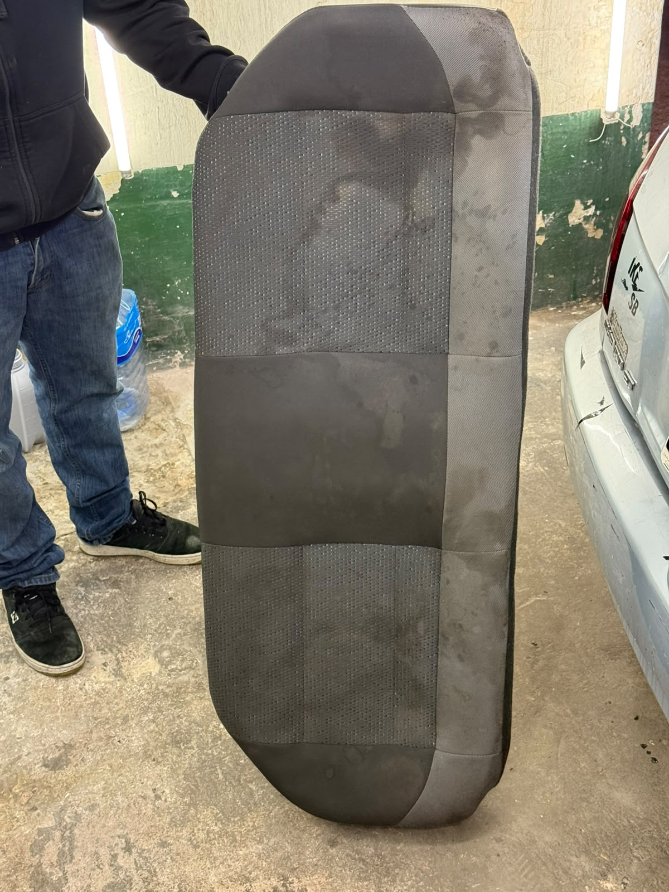
Antes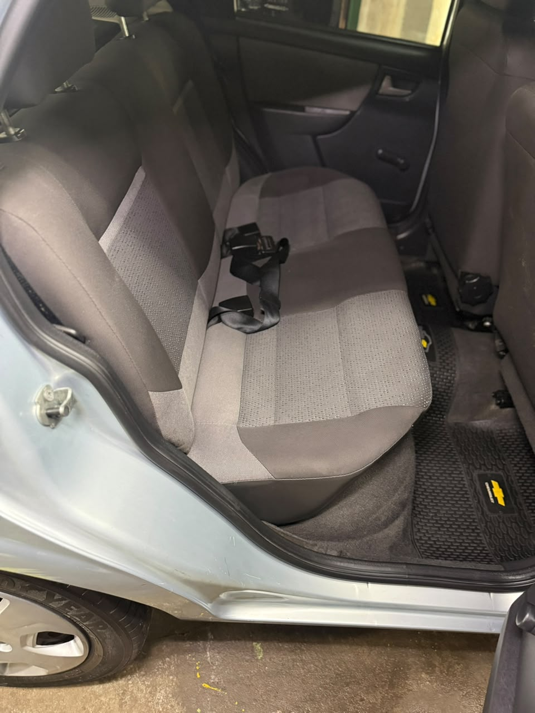
DespuésDesatascado completo de tapizados y alfombras, eliminando olores y devolviendo el color original.
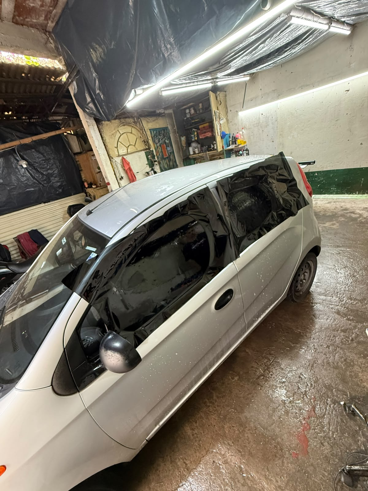
Proceso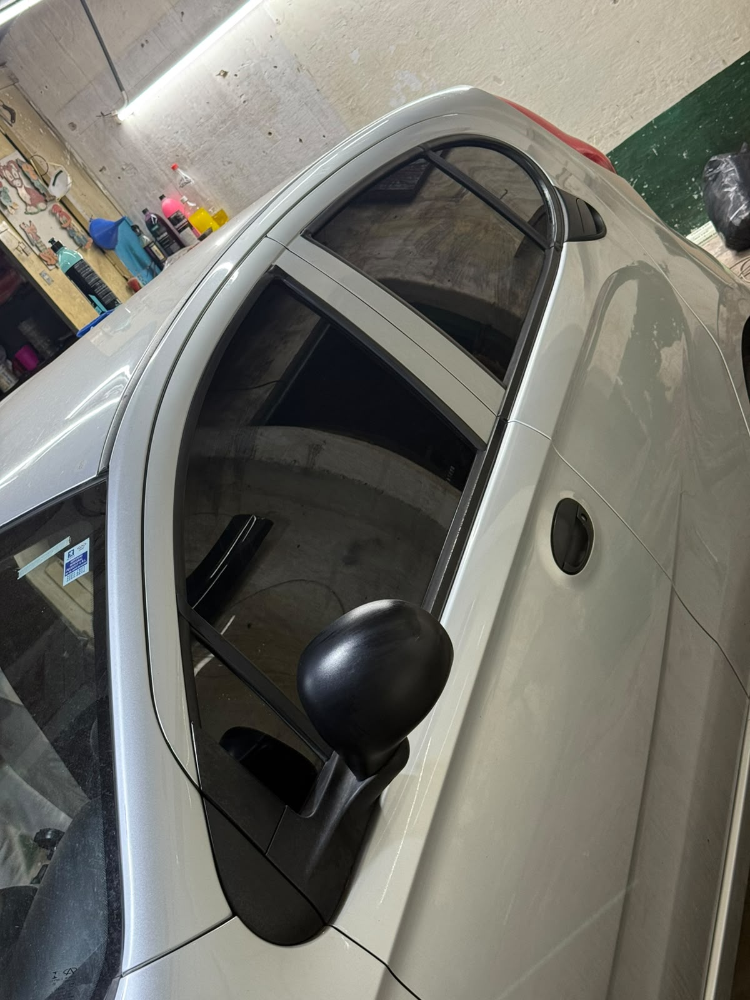
TerminadoInstalación de film premium para privacidad, reducción de calor interior y protección contra rayos UV.
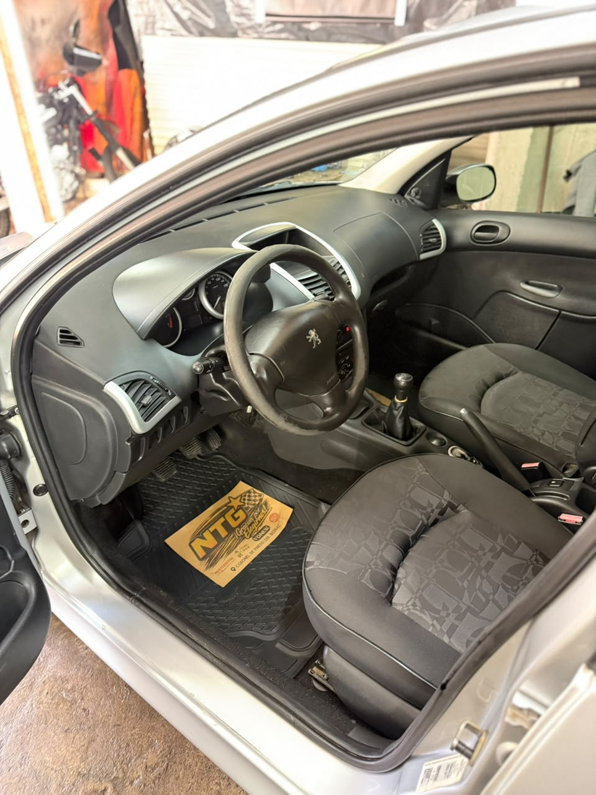
Resultado FinalAcondicionamiento de torpedo, plásticos, pedaleras y colocación de protector de cortesía By NTG.
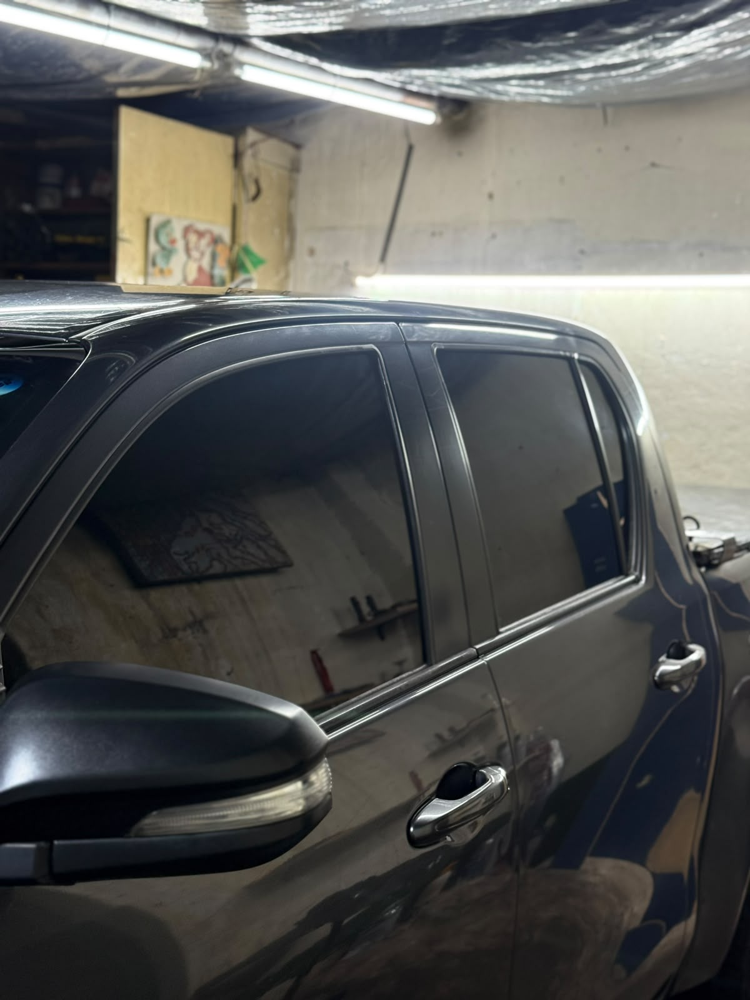
Resultado FinalTerminaciones perfectas sin burbujas en cristales laterales y luneta trasera de Toyota Hilux.
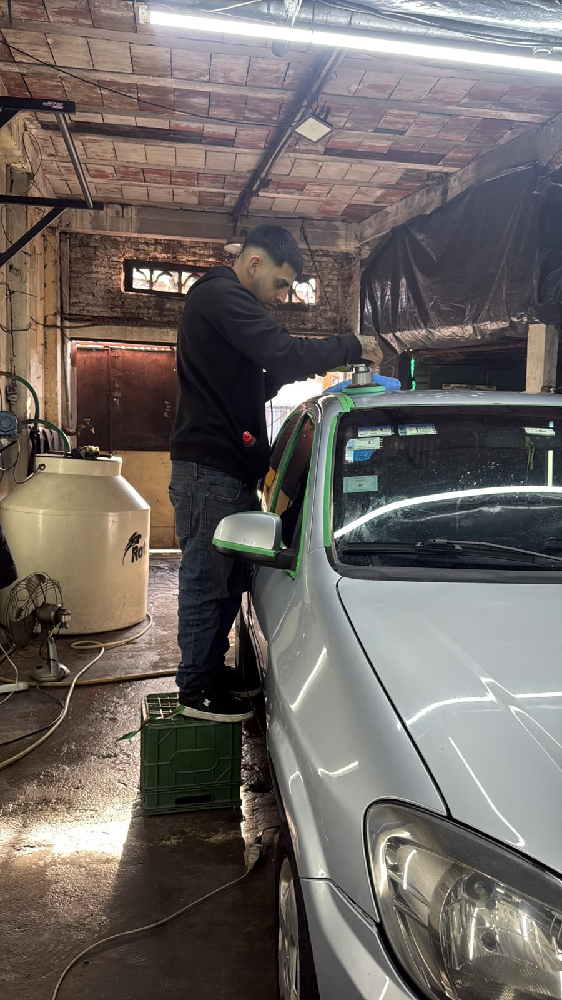
Resultado FinalEliminación de microrayones y marcas circulares con máquina rotativa, devolviendo el brillo espejo y la protección a la pintura.
Sacá tu turno y en menos de 24 hs te contactamos para coordinar.
Reservar turno